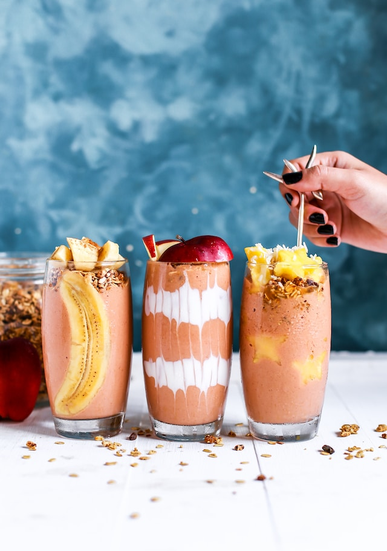
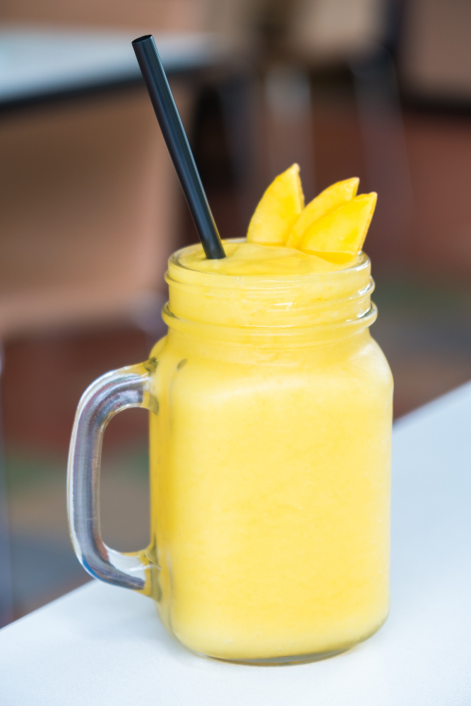

Home
Banana Mango Milkshake

Description
This mango milkshake with banana is great! Add vanilla bean ice cream if
you want this to be a really rich drink. If you add too much vanilla ice
cream, it will start to taste like a vanilla milkshake instead of a mango
drink.
INGREDIENTS
- ½ small mango - peeled, seeded and diced
- 1 banana, cut in chunks
- 1 scoop vanilla ice cream (Optional)
- 1 tablespoon white sugar, or to taste
- ⅛ teaspoon ground cinnamon, or to taste
- 1 pinch ground nutmeg, or to taste
- 2 cups milk
DIRECTIONS
step 1
-
Place mango, banana, and ice cream into a blender; sprinkle with sugar,
cinnamon, and nutmeg. Pour in milk and place the lid on the blender.
Blend until smooth, then pour into cups to serve.
